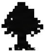

AI Meeting Notetaker
Meeting notes that never leave your Mac.
Olmo records both sides of the call, transcribes live, and writes the summary — privately, on your Mac.
Both sides
Captures your microphone and the other person's voice at the system level — with or without headphones.
No bot
Nothing joins your meeting. Recording and transcription happen locally, on your Mac.
Your keys, your data
Bring your own Deepgram and OpenAI keys. Your audio and notes never pass through our servers — everything stays on your Mac.
Yours to edit
Live transcription becomes a clean Markdown summary you can edit, search, and keep.
Syncs with Notion
Every summary auto-exports to a Notion page — one meeting, one page, never duplicated.
Google Calendar
See your meetings and start notes straight from your calendar.
From conversation to clean notes.
Watch the transcript as you talk. When you stop, Olmo writes the summary.